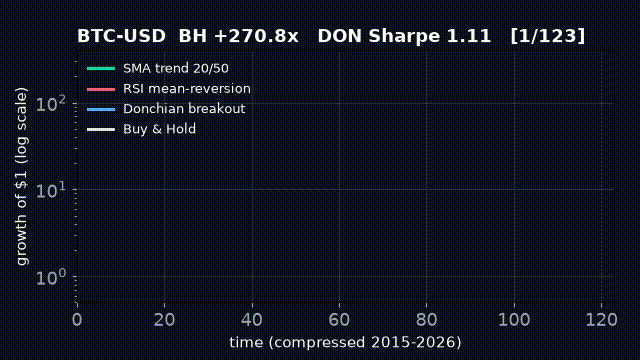
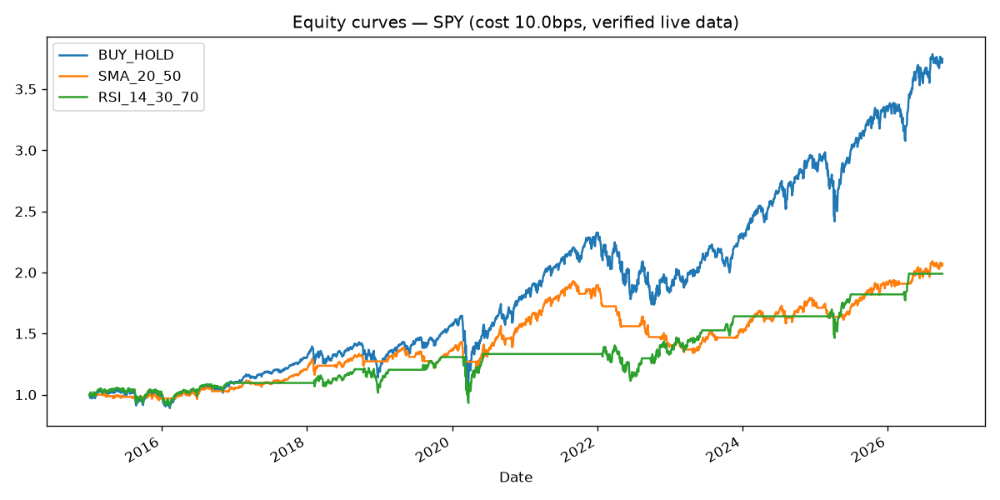

Oxford Algorithmic Trading Benchmark 2026
An honest, runnable test of 7 classic trading rules on real 2015–2026 market data (SPY, QQQ, Bitcoin). Every number on this page was computed by code — not typed by hand. If you can copy-paste 3 commands, you can reproduce it.
CEO summary (30 seconds)
1. Buy-and-hold beat every robot on total profit 2015–2026 — but suffered the deepest crashes. 2. Robots cut the pain (smaller drawdowns) yet gave up return — safety has a price. 3. Breakout trend-following was the best robot on Bitcoin (Sharpe 1.11); mean-reversion failed on crypto. 4. One in four time-windows flips sign — past winners regularly become losers, so walk-forward checks are mandatory. 5. A simple AI predictor scored ~51–57% (coin-flip) — proof that validation matters more than clever signals.
Bottom line for decision-makers: use this repo as a lie detector before trusting any backtest, fund pitch, or “90% win-rate” screenshot.
Explain it like I am five (even a donkey gets it)
🐢 Trend robot (SMA)
“If the recent average price is above the old average, buy; else wait.” Catches waves, late to turn.🙃 Bounce robot (RSI)
“If it fell too fast, buy the dip; if it pumped too fast, sit out.” Works sideways, dies in rockets.🌊 Breakout robot (Donchian)
“If price hits a 20-day high, ride; if it hits a 10-day low, hide.” Best Bitcoin robot here.🪨 Buy-and-hold rock
“Buy once, never sell.” Wins marathons, endures nightmares (−83% on Bitcoin).10-second demo (video + GIF)
MP4, ~0.1 MB, 12 fps. If video does not play, the GIF below always loops.

GIF, ~0.1 MB, autoplay loop. Both generated from verified results — see scripts/make_demo.py.
Full equity curves (verified run)

Live verified results (auto-built from benchmark.json)
SPY live:yahoo · 2955 bars · 2015-01-02→2026-10-02
| strategy | total return | Sharpe | max DD | profit factor | DSR |
|---|---|---|---|---|---|
| BUY_HOLD | 2.747 | 0.73 | -0.341 | 1.15 | 1.00 |
| SMA_20_50 | 1.070 | 0.61 | -0.305 | 1.14 | 1.00 |
| SMA_50_200 | 1.293 | 0.57 | -0.341 | 1.14 | 1.00 |
| SMA_10_30 | 0.850 | 0.54 | -0.197 | 1.13 | 1.00 |
| RSI_14_30_70 | 0.989 | 0.47 | -0.288 | 1.15 | 1.00 |
| RSI_7_20_80 | 0.622 | 0.35 | -0.288 | 1.11 | 1.00 |
| DON_20_10 | 0.541 | 0.49 | -0.126 | 1.13 | 1.00 |
Walk-forward SMA_20_50 (IS→OOS Sharpe): -0.33→1.03, 1.09→2.68, 0.72→0.75, 0.51→1.10, 1.75→-2.52, -1.00→1.88, 1.48→-0.80, 1.64→1.46 · PBO-proxy 0.375 · ML overlay OOS acc 55.8% · cost 2×: SMA_20_50 0.96, SMA_10_30 0.69, SMA_50_200 1.27, RSI_14_30_70 0.95, RSI_7_20_80 0.59, DON_20_10 0.31, BUY_HOLD 2.75
QQQ live:yahoo · 2955 bars · 2015-01-02→2026-10-02
| strategy | total return | Sharpe | max DD | profit factor | DSR |
|---|---|---|---|---|---|
| BUY_HOLD | 6.293 | 0.88 | -0.356 | 1.17 | 1.00 |
| SMA_20_50 | 1.867 | 0.67 | -0.274 | 1.15 | 1.00 |
| SMA_50_200 | 4.357 | 0.87 | -0.286 | 1.20 | 1.00 |
| SMA_10_30 | 2.641 | 0.86 | -0.244 | 1.20 | 1.00 |
| RSI_14_30_70 | 1.721 | 0.60 | -0.299 | 1.21 | 1.00 |
| RSI_7_20_80 | 1.448 | 0.54 | -0.299 | 1.19 | 1.00 |
| DON_20_10 | 1.085 | 0.62 | -0.247 | 1.16 | 1.00 |
Walk-forward SMA_20_50 (IS→OOS Sharpe): -1.02→-0.67, 1.68→0.85, 0.61→1.32, 0.94→1.58, 1.05→-1.96, 0.03→2.22, 0.68→-0.14, 1.92→1.26 · PBO-proxy 0.500 · ML overlay OOS acc 56.9% · cost 2×: SMA_20_50 1.71, SMA_10_30 2.31, SMA_50_200 4.29, RSI_14_30_70 1.66, RSI_7_20_80 1.38, DON_20_10 0.76, BUY_HOLD 6.29
BTC-USD live:yahoo · 4293 bars · 2015-01-01→2026-10-02
| strategy | total return | Sharpe | max DD | profit factor | DSR |
|---|---|---|---|---|---|
| BUY_HOLD | 270.793 | 0.88 | -0.834 | 1.18 | 1.00 |
| SMA_20_50 | 189.704 | 0.96 | -0.724 | 1.27 | 1.00 |
| SMA_50_200 | 155.904 | 0.88 | -0.693 | 1.25 | 1.00 |
| SMA_10_30 | 218.575 | 1.01 | -0.643 | 1.29 | 1.00 |
| RSI_14_30_70 | 6.732 | 0.52 | -0.645 | 1.17 | 1.00 |
| RSI_7_20_80 | 3.396 | 0.42 | -0.629 | 1.14 | 1.00 |
| DON_20_10 | 222.144 | 1.11 | -0.598 | 1.38 | 1.00 |
Walk-forward SMA_20_50 (IS→OOS Sharpe): 1.40→1.86, 1.71→3.37, -1.20→2.48, 0.47→1.17, 1.97→-1.37, -0.60→1.28, 0.68→1.42, 0.09→1.42 · PBO-proxy 0.125 · ML overlay OOS acc 50.6% · cost 2×: SMA_20_50 172.77, SMA_10_30 186.19, SMA_50_200 152.64, RSI_14_30_70 6.43, RSI_7_20_80 3.21, DON_20_10 184.13, BUY_HOLD 270.79
Risk-adjusted comparison (Sharpe — higher is better)
Bars drawn live in your browser from the same JSON the tables use. No hand-typed chart values.
How it works (no magic)
Stooq → Yahoo → cache
shift(1), zero peeking
10 bps/trade + 2× stress
IS/OOS · walk-forward · Monte-Carlo · DSR · PBO
live prices ─▶ signals(yesterday) ─▶ portfolio(-costs) ─▶ verdict
Stooq/Yahoo SMA/RSI/Donchian 10bps, 2x test Sharpe/DD/PF/DSR/PBO/WFA/MCFeatures (everything this repo does)
📡 Live-data first
Triple fallback with honestsource labelling (stooq/yahoo/cache/synthetic). Every JSON row records bars + dates.🛡️ No-cheat engineering
All signals lagged one bar; purged splits; turnover-costed; 1000+ trade significance mindset.🔬 Fund-grade evaluation
Sharpe, Sortino, MaxDD, Calmar, Profit Factor, win-rate + Deflated Sharpe + PBO-proxy + 8-window walk-forward + 2000-path Monte-Carlo + 2× cost veto.🔎 Hidden-pattern hunter
Parameter sweep heat-data, regime-flip counter, cost-fragility ranking, trend-vs-bounce scoreboard.🐳 One-command repro
docker compose up research or 3 pip commands. Same JSON, same PNG, same tables.🎓 Course-mapped
Each Oxford module (classical/behavioural → AI futures) has a runnable counterpart. Learn by running.User stories (who is this for?)
🎓 Student — “I finished the Oxford course, now what?”
Run the 3 commands, change--symbols AAPL,MSFT, watch your own IS/OOS table. You will learn more in 20 minutes than in 20 screenshots.💼 Private trader — “Should I pay for this signal service?”
Paste their rules as a 10-line function insrc/strategies/signals.py, rerun, demand OOS Sharpe > 0.5 + 2×-cost survival. If it fails here, keep your money.🏦 Analyst / fund gatekeeper — “Is this fund’s backtest real?”
Use the walk-forward + PBO-proxy + Monte-Carlo p5 drawdown as a checklist. Ask for the same four numbers. No numbers, no allocation.👩💻 Builder — “I want my own strategy lab”
Fork, addSTRATEGIES["MY_IDEA"], sweep parameters, ship preview.html to your team. Docker keeps it identical everywhere.🔬 Researcher / PhD — “I need a baseline + 6 paper ideas”
Cite the verified tables, then extend: K=10k DSR, GARCH regime gate, purged CPCV, cost-aware frontier, intraday guards, LLM-overlay audit (all sketched in README §8).🤷 Total beginner — “I know nothing”
Read only the donkey section + CEO summary + video. Then run Quickstart. You cannot break anything — it only reads public prices.Quickstart (3 steps, copy-paste)
git clone <this-repo> && cd oxford-algo-trading-benchmark-2026
pip install -r requirements.txt
python -m src.experiments.run_benchmark --symbols SPY,QQQ,BTC-USD --start 2015-01-01
# → results/benchmark.json results/table.md results/equity.png
python -m pytest tests/ -v
# Docker alternative: docker compose up researchTry your own idea (5 lines)
# src/strategies/signals.py
STRATEGIES["MY_BREAKOUT"] = lambda c: position_donchian(c, 40, 20)
# rerun:
# python -m src.experiments.run_benchmark --symbols SPY --start 2018-01-01FAQ (asked by real humans)
Does it trade live / spend money?
No. Research-only. It reads free public prices and writes pictures + JSON. No broker keys, no orders.Why did buy-and-hold win? Are robots useless?
BH wins return in a 2015–2026 mega-bull; robots win sleep (smaller drawdowns). Pick your pain. The repo quantifies the trade.Why is RSI terrible on Bitcoin?
Trending + fat-tailed markets punish dip-buying. The table proves it: RSI Sharpe 0.42–0.52 vs trend 0.88–1.11. Gate it by volatility or skip crypto.What does “DSR = 1.00 everywhere” mean?
Honestly: our K=7 trial count is too small, so significance saturates. It is a warning light, not a trophy. Fix = K≥100 sweep-as-trials (roadmapped).Can I use other symbols / dates / costs?
Yes:--symbols AAPL,MSFT,ETH-USD --start 2020-01-01 --cost_bps 20. Sources + bars are recorded in JSON.Offline / no internet?
It reusesdata/*.csv cache, else clearly-labelled synthetic data. Synthetic rows say "source":"synthetic" — never mixed silently.Troubleshooting (3-minute fixes)
① yfinance empty / 429 → wait 60 s, rerun; Stooq is tried first automatically.
② pip “externally managed” → use pip install --break-system-packages -r requirements.txt or Docker.
③ video will not play → use the GIF right beside it; both are <1 MB.
④ Docker build slow → first pull of python:3.12-slim takes minutes once, then cached.
⑤ Numbers drifted a little on rerun → normal: Yahoo revises history; JSON stamps dates + bars for audit.
Project map
docker-compose.yml Dockerfile requirements.txt LICENSE (MIT)
src/data_loader.py src/strategies/signals.py
src/validation/metrics.py src/validation/walkforward.py
src/experiments/run_benchmark.py scripts/make_demo.py scripts/build_preview.py
tests/test_smoke.py results/ docs/demo.mp4 docs/demo.gif preview.html paper/PAPER.mdContributing & License
Issues and PRs welcome. Add a strategy (10 lines) + keep pytest green + rerun the benchmark and paste the new table rows. MIT — free for commercial use, no warranty, not investment advice.